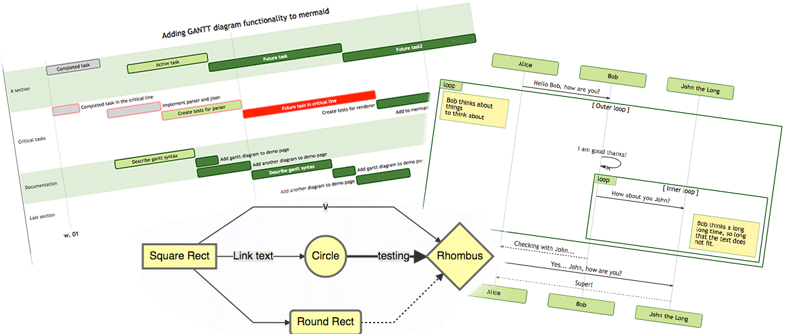
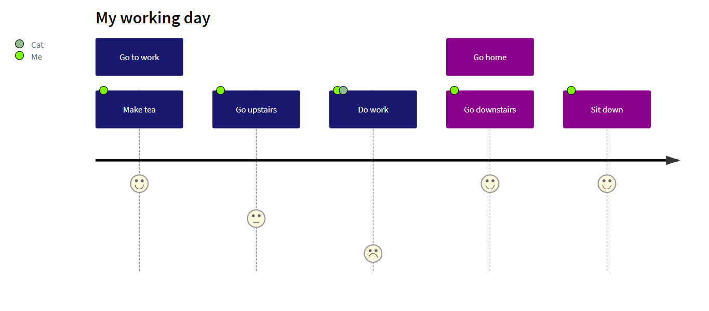

About Mermaid
Mermaid lets you create diagrams and visualizations using text and code.
It is a Javascript based diagramming and charting tool that renders Markdown-inspired text definitions to create and modify diagrams dynamically.
If you are familiar with Markdown you should have no problem learning Mermaid's Syntax.



The main purpose of Mermaid is to help with Visualizing Documentation, and helping it catch up with Development.
Documentation-Rot is a Catch-22 that Mermaid helps to solve.
Diagramming and Documentation cost precious developer time and get outdated quickly. However, not having diagrams or documentation ruins productivity and hampers organizational learning.
Mermaid addresses this Catch-22 situation by reducing the time, effort and tooling that is required to create modifiable diagrams and charts which in turn results in smarter and more reusable content. Mermaid, as a text-based diagramming tool allows for quick and easy updates and makes documentation much easier. It can also be included in production scripts and other pieces of code as per requirement.
Mermaid is a Diagramming tool for everyone.
Even non-programmers can create diagrams through the Mermaid Live Editor, Visit the Tutorials Page for the Live Editor video tutorials.
Many editors, wikis and other tools also have mermaid integrations and plugins, making it easy to start using mermaid. A few of those are described in Simple start to write diagrams.
For a more detailed introduction to Mermaid and some of it's basic uses, refer to Overview for Beginners and Usage.
🌠CDN | 📖 Documentation | 🙌 Contribution | 📜 Version Log | 🔌 Plug-Ins
🖖 Keep a steady pulse: mermaid needs more Collaborators, Read More.
:trophy: Mermaid was nominated and won the JS Open Source Awards (2019) in the category "The most exciting use of technology"!!!
Thanks to all involved, people committing pull requests, people answering questions and special thanks to Tyler Long who is helping me maintain the project 🙏
Diagram Types
Flowchart
graph TD;
A-->B;
A-->C;
B-->D;
C-->D;

Sequence diagram
sequenceDiagram
participant Alice
participant Bob
Alice->>John: Hello John, how are you?
loop Healthcheck
John->>John: Fight against hypochondria
end
Note right of John: Rational thoughts <br/>prevail!
John-->>Alice: Great!
John->>Bob: How about you?
Bob-->>John: Jolly good!

Gantt diagram
gantt
dateFormat YYYY-MM-DD
title Adding GANTT diagram to mermaid
excludes weekdays 2014-01-10
section A section
Completed task :done, des1, 2014-01-06,2014-01-08
Active task :active, des2, 2014-01-09, 3d
Future task : des3, after des2, 5d
Future task2 : des4, after des3, 5d

Class diagram
classDiagram
Class01 <|-- AveryLongClass : Cool
Class03 *-- Class04
Class05 o-- Class06
Class07 .. Class08
Class09 --> C2 : Where am i?
Class09 --* C3
Class09 --|> Class07
Class07 : equals()
Class07 : Object[] elementData
Class01 : size()
Class01 : int chimp
Class01 : int gorilla
Class08 <--> C2: Cool label

Git graph - :exclamation: experimental
gitGraph:
options
{
"nodeSpacing": 150,
"nodeRadius": 10
}
end
commit
branch newbranch
checkout newbranch
commit
commit
checkout master
commit
commit
merge newbranch

Entity Relationship Diagram - :exclamation: experimental
erDiagram
CUSTOMER ||--o{ ORDER : places
ORDER ||--|{ LINE-ITEM : contains
CUSTOMER }|..|{ DELIVERY-ADDRESS : uses

User Journey Diagram
journey
title My working day
section Go to work
Make tea: 5: Me
Go upstairs: 3: Me
Do work: 1: Me, Cat
section Go home
Go downstairs: 5: Me
Sit down: 5: Me

Installation
In depth guides and examples can be found at Getting Started and Usage.
It would also be helpful to learn more about mermaid's Syntax.
CDN
https://unpkg.com/mermaid@<version>/dist/
To select a version:
Replace <version> with the desired version number.
Latest Version: https://unpkg.com/browse/mermaid@8.8.0/
Deploying Mermaid
To Deploy Mermaid:
- You will need to install node v16, which would have npm
- Download yarn using npm
- Enter the following command:
yarn add mermaid - You can then add mermaid as a dev dependency using this command:
yarn add --dev mermaid
Mermaid API
To deploy mermaid without a bundler, one can insert a script tag with an absolute address and a mermaidAPI call into the HTML like so:
<script src="https://cdn.jsdelivr.net/npm/mermaid/dist/mermaid.min.js"></script>
<script>mermaid.initialize({startOnLoad:true});</script>
Doing so will command the mermaid parser to look for the <div> tags with class="mermaid". From these tags mermaid will try to read the diagram/chart definitions and render them into svg charts.
Examples can be found at Other examples
Sibling projects
Request for Assistance
Things are piling up and I have a hard time keeping up. It would be great if we could form a core team of developers to cooperate with the future development of mermaid.
As part of this team you would get write access to the repository and would represent the project when answering questions and issues.
Together we could continue the work with things like:
- Adding more types of diagrams like mindmaps, ert diagrams, etc.
- Improving existing diagrams
Don't hesitate to contact me if you want to get involved!
For contributors
Setup
yarn install
Build
yarn build:watch
Lint
yarn lint
We use eslint. We recommend you to install editor plugins to get real time lint result.
Test
yarn test
Manual test in browser: open dist/index.html
Release
For those who have the permission to do so:
Update version number in package.json.
npm publish
The above command generates files into the dist folder and publishes them to npmjs.org.
Credits
Many thanks to the d3 and dagre-d3 projects for providing the graphical layout and drawing libraries!
Thanks also to the js-sequence-diagram project for usage of the grammar for the sequence diagrams. Thanks to Jessica Peter for the inspiration and for the starting point of gantt rendering.
Mermaid was created by Knut Sveidqvist for easier documentation.
Here is the full list of the projects contributors.